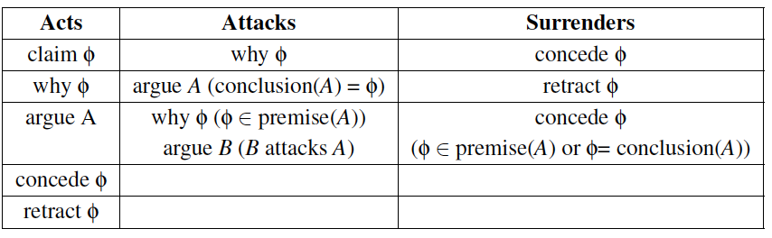
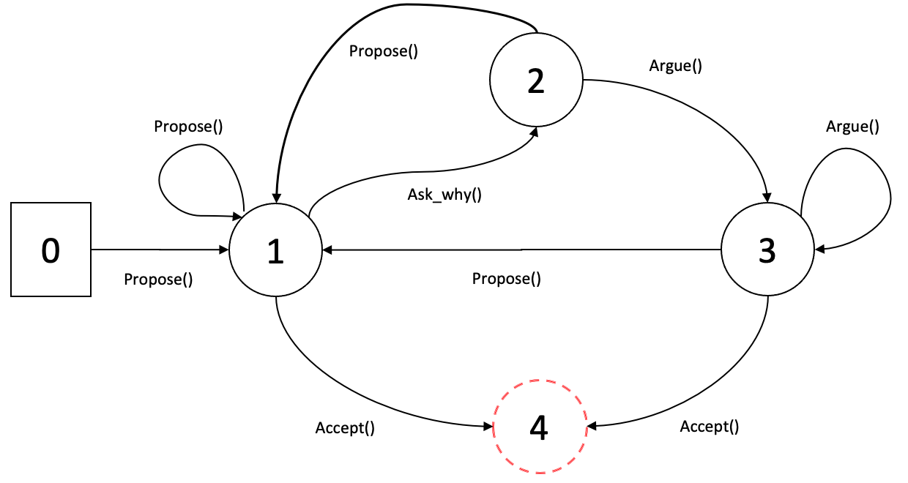

6.1 Arguments in dialogue¶
In the previous session, we have seen what is an argumentation system without any reference to interaction. However, arguments can be seen as embedded in a procedural context, in that they having been put forward on one side or the other of an issue during a dialogue between human and/or artificial agents. In other terms, one way to define argumentation logics is in the dialectical form of dialogue games (or dialogue systems). Such games model interaction between two or more players, where arguments in favour and against a proposition are exchanged according to certain rules and conditions [Carlson, 1983].
According to [Gordon et al., 2007]
“The information provided by a dialogue for constructing and evaluating argument is
richer that just a set of sentences. Indeed, the context can tell us whether some party has questioned or conceded a statements, or whether a decision has been taken to accept or reject a claim.”
6.2 Dialogue system¶
Dialogue systems essentially define the principle of coherent dialogue and the condition under which a statement made by an individual is appropriate. Different formal dialogues exist, taking into account various information, such as: participants, communication language, roles of participants, the dialogue goal, etc.
In what follows we present only the necessary elements for the presentation of our proposal in this course. For more details on dialogue systems, we refer the reader to [Prakken, 2005a; McBurney and Parsons, 2003; Amgoud et al., 2000a; McBurney and Parsons, 2009].
Locutions rules (speech acts, moves). Rules which indicate what utterances are permitted. Typically, legal locutions permit participants to assert propositions, permit others to question or contest prior assertions, and permit those asserting propositions which are subsequently questioned or contested to justify their assertions. Justifications may involve the presentation of a proof of the proposition or an argument for it.
Commitments rules. Rules defining the effect of the moves in the “commitment stores”. Indeed, associated with each player is a commitment store, which holds the statements players have made and the challenges they have issued. There are then rules which define how the commitment stores are updated. For example, a question posed by one agent to another may impose a commitment on the second to provide a response; until provided, this commitment remains undischarged.
Dialogue rules (protocol). Rules for regulating the moves. It specifies for instance the set of speech acts allowed in a dialogue and their allowed types of replies. Various dialogue protocols can be found in the literature, especially for persuasion [Prakken, 2001] and negotiation [Parsons et al., 1998; Amgoud et al., 2000b]
Termination rules. Rules that define the circumstances under which the dialogue ends.
Now, it is clear that different “types of dialogue” involve different set of rules. For example, the set of rules given in the following table correspond to a persuasion dialogue.
{kind=link}
6.3 Negotiation protocols¶
The set of rules which govern the interaction. This covers the permissible types of participants (e.g. the negotiators and any relevant third parties), the negotiation states (e.g. accepting bids, negotiation closed), the events which cause negotiation states to change (e.g. no more bidders, bid accepted), and the valid actions of the participants in particular states (e.g. which messages can be sent by whom, to whom, at what stage).
More precisely, the rules that form the negotiation protocol may address the following issues:
rules for admission, which specify when an agent can participate in a negotiation dialogue and under what conditions;
termination rules, which specify when an encounter must end (e.g., if one agent utters an acceptance locution);
rules for proposal validity, which specify when a proposal is compliant with some conditions (e.g., an agent may not be allowed to make a proposal that has already been rejected);
rules for outcome determination, which specify the outcome of the interaction; in argumentation-based frameworks, these rules might enforce some outcome based on the underlying theory of argumentation (e.g., if an agent cannot construct an argument against a request, it accepts it [Parsons et al., 1998]);
6.4 An example of an argumentation-based negotiation protocol¶
We are at the end of this practical work. The diffrent questions and functions implemented till now will help you to run (very soon :-) ) a negotiation between at least two agents. Before to push the run button, you need to check that you have implemented all the necessary components.
For this, the following algorithm synthetises the conditions and the rules for the different moves during and interaction.

This algorithm is represented by the following transition state diagram and a possible output (interaction) is depicted in the figure.
{kind=link}

The different perfomatives used in the algorithm are described in the previous session.
Questions¶
1- Read carefully the algorithm and update your implementation (when it is necessary) that it corresponds to the described functioning. Again this is just an example and you can choose different stratgies/conditions. Feel free to make your own choices.
2- set-up a number of agents and lunch the negotiation processes between each pair of agents.
3- At the end of each negotiation:
récupérer l’agent gagnant, c’est celui qui a parlé en dernier avant un ACCEPT ou le récupérer dans les arguments qui ont zéro contre-arguments dans la structure de données.
récupérer du coup l’item (ou les items) défendu par ces arguments
Faire une petie analyse pour chaque agent combien de negotiation il a gagné, quel item est le plus défendu, quel est le critère le plus mis en avant, et.
6.5 To go further…¶
à partir de \(n>4\) construire le graphe d’arguments (issus des différentes négotiations) et calculer l’ensemble des arguments acceptables selon une semantique de votre choix (cours: Semantic de Dung). Quelle conclusion peut on déduire
this last question is to be done only if you have managed to complete all the requested questions.